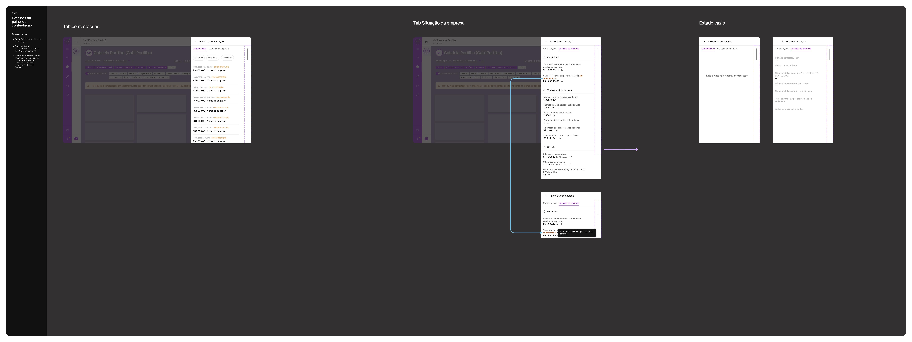
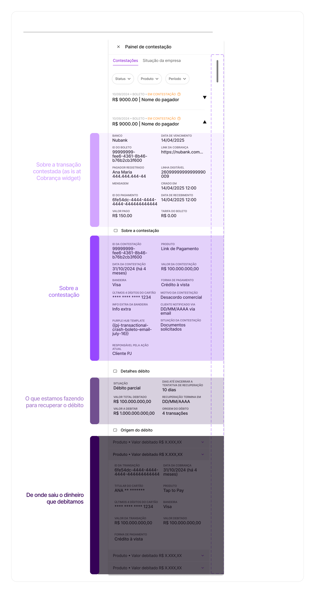
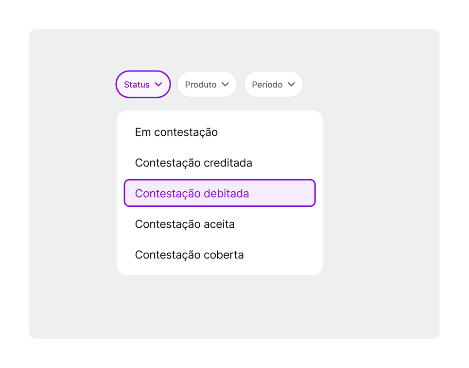
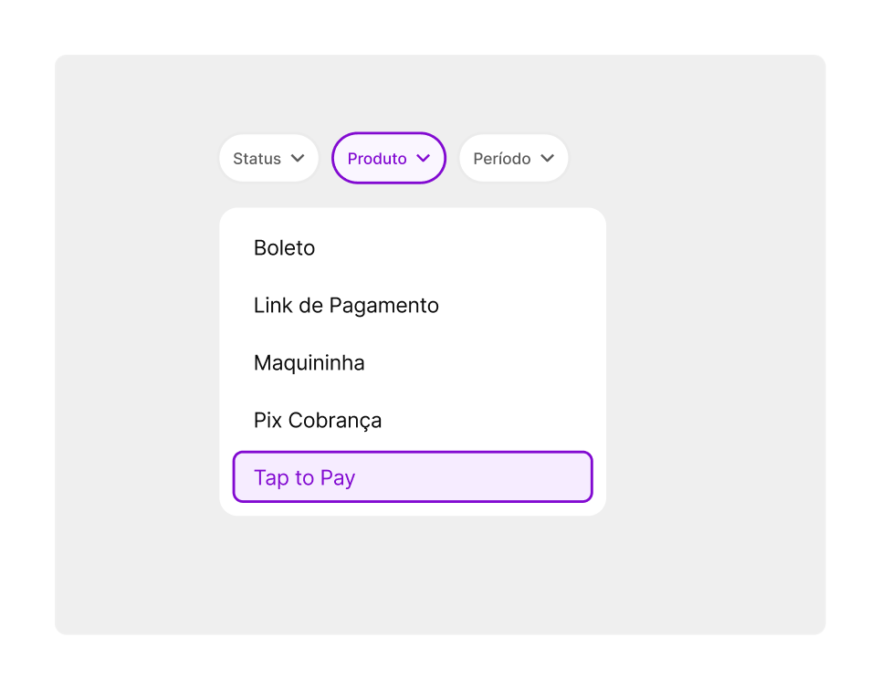
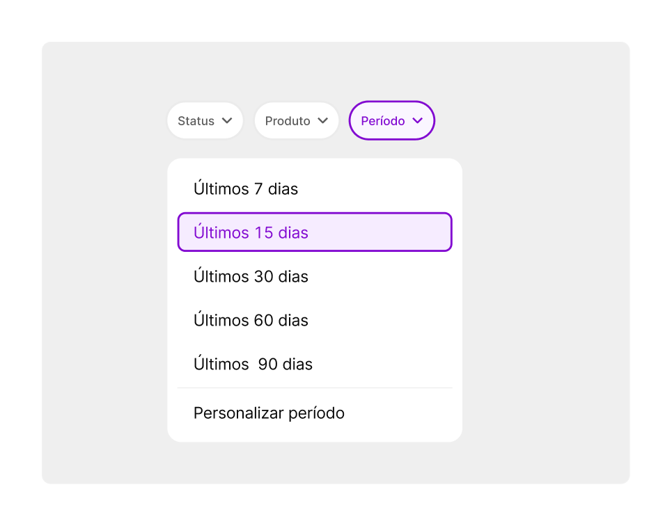
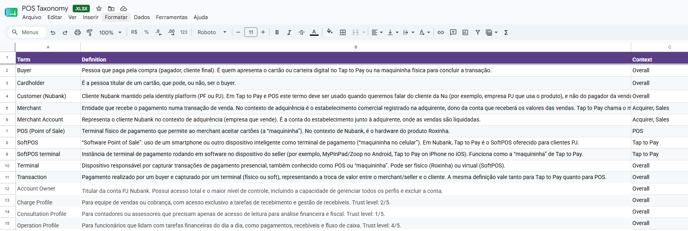
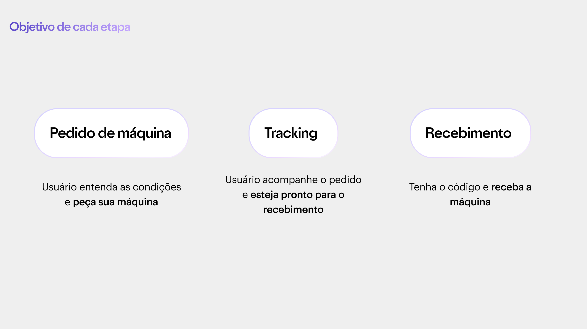
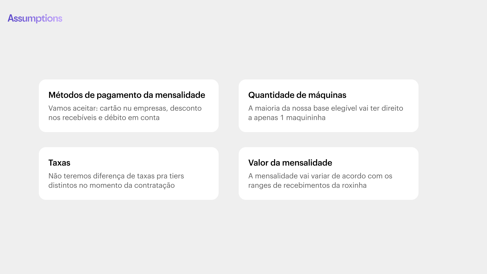
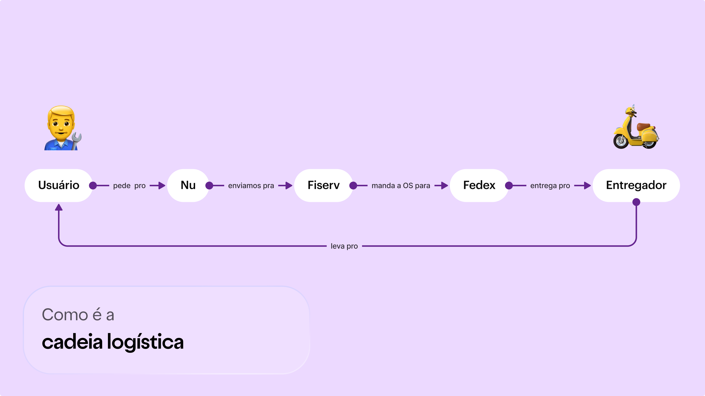

Tenho 8+ anos moldando experiências em fintechs de alto crescimento como Nubank e PicPay. Começo pelo conteúdo, mas minha atuação atravessa arquitetura de informação, estratégia de produto e design de interação.
Acredito que linguagem bem desenhada é infraestrutura: reduz fricção, constrói confiança e move comportamento. Quando não estou desenhando, estou escrevendo ficção científica ou mentorando designers em início de carreira.
I have 8+ years shaping experiences at high-growth fintechs like Nubank and PicPay. I start with content, but my work spans information architecture, product strategy, and interaction design.
I believe well-designed language is infrastructure: it reduces friction, builds trust, and moves behavior. When I'm not designing, I'm writing science fiction or mentoring early-career designers.
Trabalho com ownership end-to-end desde o problema até o impacto, transitando entre decisões de design desde UI até focadas em content design — a depender do projeto.
I work with end-to-end ownership from the problem to impact, moving between design decisions from UI to content design — depending on the project.
Sistemas de conteúdo
Content systems
Crio guidelines e governança que escalam com o produto e contribuem para o design system.
I create guidelines and governance that scale with the product and contribute to the design system.
AI + processo de design
AI + design process
Uso ferramentas de IA para acelerar ideação e validação, contribuir para sistemas de design e ajudar times a tomarem decisões mais rápidas e fundamentadas.
I use AI tools to accelerate ideation and validation, contribute to design systems, and help teams make faster, better-grounded decisions.
Cross-funcional
Cross-functional
Colaboro de perto com Produto, outros Designers e Operações para explorar o espaço do problema e alinhar decisões de design.
I collaborate closely with Product, other Designers, and Operations to explore the problem space and align design decisions.
Referências
References
"Ana é uma Content Designer genuinamente apaixonada por seus clientes. Em Insurance, mais de uma vez desafiou decisões de negócio mostrando a perspectiva do cliente — e conseguiu mudar aspectos críticos do produto."
"Ana is a Content Designer who is genuinely passionate about her customers. In Insurance, more than once, she challenged business decisions by showing the customer perspective — and was able to change critical product aspects."
Ivan ToledoDesign Manager II · iFood (ex-Nubank)Design Manager II · iFood (formerly Nubank)
"A Ana além de uma pessoa incrível, é uma profissional exemplar. Ela trata assuntos que demandam atenção com muita leveza e determinação. Os processos que ela constrói são super completos."
"Ana is not only an incredible person but an exemplary professional. She handles demanding topics with ease and determination. The processes she builds are very thorough."
Estratégia de conteúdoContent strategyTom de vozVoice & toneDadosDataCross-squad
No Nubank PJ, as contestações de vendas cresciam na mesma velocidade que o negócio — 2,3 mil casos por mês, 85% tratados manualmente, com o cliente completamente no escuro. O projeto Chargeback Revamp nasceu para transformar uma operação crítica e invisível em uma experiência que gera confiança: menos tickets, mais clareza, e conteúdo como solução estrutural.
At Nubank PJ, sales disputes were growing as fast as the business — 2,300 cases per month, 85% handled manually, with customers completely in the dark. The Chargeback Revamp project was born to turn a critical, invisible operation into a trust-building experience: fewer tickets, more clarity, and content as a structural solution.
EmpresaCompanyNubank
PeríodoPeriod2025
PapelRoleSenior Product Design
EscopoScopeContent strategy, comunicações transacionais, guidelines de linguagem, UI copy, interação e handoff com engenhariaContent strategy, transactional communications, language guidelines, UI copy, interaction design and engineering handoff
ColaboradoresCollaboratorsProduct designer, PM, times de Payments PJ, operações e Product OpsProduct designer, PM, Payments PJ, operations and Product Ops teams
Contexto
Context
O volume de contestações de vendas no Nubank PJ crescia na mesma proporção que o negócio — chegando a 2,3 mil casos por mês. O processo era manual (85% dos casos exigiam acompanhamento humano), fragmentado entre múltiplas equipes, e deixava o cliente no escuro sobre o que estava acontecendo com seu dinheiro.
The volume of sales disputes at Nubank PJ was growing at the same pace as the business — reaching 2,300 cases per month. The process was manual (85% of cases required human follow-up), fragmented across multiple teams, and left customers in the dark about what was happening to their money.
O domínio: o que é uma contestação e como ela funciona no ecossistema PJ.The domain: what a chargeback is and how it works in the PJ ecosystem.A mecânica: como o processo de contestação funcionava — e onde ele quebrava.The mechanics: how the dispute process worked — and where it broke down.
Problema
Problem
O tNPS das contestações estava em -2,17% — muito abaixo da meta de 70 para PJ — e cerca de 40% dos vendedores afetados entravam em contato com o suporte com uma mesma dúvida: "Cadê meu dinheiro?". A causa raiz era um apagão de dados no meio do processo: a informação existia, mas não estava integrada nem acessível onde era necessária.
The chargeback tNPS stood at -2.17% — well below PJ's target of 70 — and around 40% of affected merchants contacted support with the same question: "Where's my money?" The root cause was a data blackout in the middle of the process: the information existed, but wasn't integrated or accessible where needed.
O que fiz
What I did
O projeto tinha duas frentes: uma de processo, análise e risco — liderada pelo time de produto, operações e fraude — e outra de experiência, que era a minha. Atuei como designer responsável pelo projeto com duplo chapéu: content design e product design. Dado o escopo, o tempo e os recursos de engenharia disponíveis (projeto cross-BU de PJ), precisamos priorizar desde o início — e foi assim que estruturei as entregas em fatias.
The project had two fronts: one focused on process, analysis, and risk — led by the product, operations, and fraud teams — and another focused on experience, which was mine. I acted as the designer responsible for the project wearing two hats: content design and product design. Given the scope, timeline, and available engineering resources (a cross-BU PJ project), we had to prioritize from day one — and that's how I structured deliveries into slices.
Enquanto mapeávamos o tamanho do problema, atuei nos pontos de melhoria imediata: auditei todos os conteúdos e pontos de contato com CX, ajustei o processo e a jornada interna de atendimento, e redesenhei as comunicações transacionais. Essas mudanças foram ao ar antes de qualquer entrega estrutural de produto.
While we were still sizing the problem, I tackled immediate improvement areas: audited all content and CX touchpoints, adjusted the internal support process and journey, and redesigned the transactional communications. These changes went live before any structural product delivery.
Mapeamento da jornada de contestação — pontos de atrito, volume de contatos de suporte e gaps de informação identificados.Chargeback journey mapping — friction points, support contact volume, and information gaps identified.
Terminologias unificadas, diretrizes de tom de voz e guidelines de linguagem.Unified terminology, tone-of-voice guidelines, and language guidelines.Nova régua de comunicação para contestações PJ — iterações ampliadas para cobrir toda a jornada do cliente.New communication ruleset for PJ disputes — expanded iterations covering the full customer journey.
Quando o conteúdo guia e prepara — redesign das comunicações com foco em clareza, redução de atrito e protagonismo do usuário.When content guides and prepares — communications redesigned around clarity, friction reduction, and user empowerment.
02
Frente 2 — Experiência do agente internoFront 2 — Internal agent experience
A premissa que defendi com o time foi: não dá para desenhar a experiência do usuário sem resolver primeiro a do agente interno. As informações existiam nos nossos sistemas e nas consultas de API dos parceiros — mas não estavam organizadas nem acessíveis para quem atendia. O agente que lidava com money in/money out não era o mesmo com treinamento profundo em chargeback, e quem resolvia o problema de sumiço de dinheiro ficava completamente no escuro.
The premise I defended with the team was: you can't design the user experience without first solving the internal agent experience. The information existed in our systems and partner API queries — but it wasn't organized or accessible to the people handling support. The agent managing money in/money out wasn't the same one with deep chargeback training, and whoever was solving the "missing money" problem was operating completely in the dark.
Primeira entrega: visibilidade. O maior motivo de contato dos usuários PJ não era o chargeback em si — era o sumiço do dinheiro, uma consequência do processo que ninguém via. Desenhei a primeira notificação que dava visibilidade de que algo estava acontecendo no perfil do cliente, trabalhando com os componentes existentes no sistema interno do Nubank (Shuffle).
Segunda entrega: consolidação no Shuffle. Mapeei junto ao CX e aos parceiros todas as informações necessárias para tratar uma contestação. Conduzi duas sessões de workshop e uma de critique com agentes da BPO e do próprio Nubank — para validar se havíamos mapeado tudo e se as nomenclaturas escolhidas faziam sentido para quem usaria a ferramenta. Depois, criei a primeira visualização que consolidava todas essas informações em uma única tela no Shuffle.
First delivery: visibility. The biggest driver of PJ user contacts wasn't the chargeback itself — it was the disappearing money, a consequence of the process that no one could see. I designed the first notification giving visibility that something was happening on the client's profile, working with existing components in Nubank's internal system (Shuffle).
Second delivery: Shuffle consolidation. I mapped with CX and partners all the information needed to handle a dispute. I ran two workshop sessions and one critique session with BPO and internal Nubank agents — to validate whether we'd mapped everything and whether the chosen nomenclature made sense to the people who'd actually use it. I then created the first visualization consolidating all that information into a single Shuffle screen.
Primeira entrega: o fluxo de visibilidade — notificação e rastreio do chargeback para o cliente PJ.First delivery: the visibility flow — chargeback notification and tracking for PJ customers.

Segunda entrega: a evolução do Shuffle — três estados do painel interno de gestão de contestações.Second delivery: the Shuffle evolution — three states of the internal chargeback management panel.

Anatomia do painel de detalhe: cada seção responde a uma pergunta diferente do agente interno — o que aconteceu, em qual transação, o que estamos fazendo, e de onde saiu o dinheiro.Detail panel anatomy: each section answers a different question for the internal agent — what happened, in which transaction, what we're doing, and where the money came from.

Filtro Status — os estados do ciclo de vida de uma contestação, com nomenclatura validada nos workshops com agentes da BPO e do Nubank.Status filter — chargeback lifecycle states, with nomenclature validated in workshops with BPO and Nubank agents.

Filtro Produto — cobertura de todos os produtos PJ: Maquininha, Tap to Pay, Link de Pagamento, Boleto, Pix Cobrança.Product filter — coverage across all PJ products: Card machine, Tap to Pay, Payment link, Boleto, Pix Cobrança.

Filtro Período — janelas temporais configuráveis, incluindo período personalizado para análise histórica.Period filter — configurable time windows, including custom range for historical analysis.
A aposta que defendiThe bet I defended
Como designer, defendi uma premissa: esse é um dos momentos mais difíceis na vida de um PJ — e muitas microempresas (perfil dominante no Nubank PJ naquele momento) sequer sabem o que é um chargeback. Em vez de simplesmente cobrar o valor devido, como é prática de mercado, propus que, se passasse pelos critérios de risco e negócio, o Nubank arcasse com o primeiro chargeback de um usuário valioso. Não há demonstração de confiança mais concreta do que essa. E havia um argumento de negócio real: naquele momento, o Nubank já absorvia boa parte dos chargebacks de qualquer forma — sem processos nem esforço estruturado para recuperação. A proposta era transformar um custo invisível em um gesto intencional de parceria.
As a designer, I defended a premise: this is one of the hardest moments in a PJ user's life — and many microenterprises (the dominant profile in Nubank PJ at the time) don't even know what a chargeback is. Instead of simply charging the amount due, as is standard market practice, I proposed that — if it passed risk and business criteria — Nubank should absorb the first chargeback for a valuable user. There's no more concrete demonstration of trust than that. And there was a real business argument: at that point, Nubank was already absorbing a large share of chargebacks anyway — without structured processes or effort toward recovery. The proposal was to turn an invisible cost into an intentional act of partnership.
+92%
engajamento nas comunicações — taxa de resposta de 13,55% → 26,07% apenas com mudança de conteúdo, implicando em −42% de tickets de atendimento
communications engagement — response rate from 13.55% → 26.07% through content changes alone, resulting in −42% in support tickets
Veja tambémSee also
Content Metrics
Liderança de iniciativaInitiative leadershipUX MetricsHeart FrameworkCross-empresaCompany-wide
Conteúdo sem métrica é conteúdo sem voz dentro do negócio. Liderei a criação de um processo sistemático de mensuração do impacto de Content Design na BU de Seguros do Nubank — conectando dados qualitativos de experiência com métricas de produto. O piloto virou referência e integrou o UX Metrics Playbook oficial do Nubank.
Content without metrics has no voice in the business. I led the creation of a systematic process to measure Content Design impact within Nubank's Insurance BU — connecting qualitative experience data with product metrics. The pilot became a reference and contributed to Nubank's official UX Metrics Playbook.
EmpresaCompanyNubank Seguros · CoE
PeríodoPeriod2023
PapelRoleSenior Content Design
EscopoScopeFramework de métricas, piloto com Life Insurance e co-criação do UX Metrics PlaybookMetrics framework, Life Insurance pilot and co-creation of the UX Metrics Playbook
ColaboradoresCollaboratorsTime de UXR, lideranças de produto e design, 8 especialistas do CoE cross-empresaUXR team, product and design leadership, 8 cross-company CoE specialists
Contexto
Context
Conteúdo sem métrica e acionável claro é conteúdo sem voz dentro do negócio. Liderei uma iniciativa para criar um processo sistemático de mensuração de impacto de Content Design dentro da BU de Seguros do Nubank — conectando dados qualitativos de experiência com métricas de produto.
Content without clear, actionable metrics has no voice in the business. I led an initiative to create a systematic process for measuring Content Design impact within Nubank's Insurance BU — connecting qualitative experience data with product metrics.
Problema
Problem
As decisões de conteúdo eram tomadas sem base em dados de experiência do usuário. Não havia processo para medir se o conteúdo estava gerando confiança, engajamento ou entendimento do produto — pilares dos nossos produtos. Isso minava o impacto de CD nas discussões estratégicas do negócio.
Content decisions were made without user experience data. There was no process to measure whether content was building trust, driving engagement, or enabling product understanding — all core pillars of our products. This undermined CD's impact in strategic business discussions.
O que fiz
What I did
Adaptei o Heart Framework para criar objetivos de mensuração conectados às metas da BU
Desenvolvi e refinei o SAS (Satisfaction Score) específico para seguros, passando de 8 para 6 atributos após validação com UXR
Rodei o piloto com ~55k clientes de Life Insurance (2.647 respostas, ~4% de taxa de resposta)
Apresentei resultados e next steps para lideranças de produto e design
Fui convidada para co-criar o UX Metrics Playbook oficial do Nubank como parte do CoE cross-empresa, ao lado de 8 especialistas de diferentes BUs
Adapted the Heart Framework to create measurement objectives connected to BU goals
Developed and refined the SAS (Satisfaction Score) specific to insurance, reducing from 8 to 6 attributes after UXR validation
Ran the pilot with ~55k Life Insurance customers (2,647 responses, ~4% response rate)
Presented results and next steps to product and design leadership
Was invited to co-create Nubank's official UX Metrics Playbook as part of a cross-company CoE, alongside 8 specialists from different BUs
Fast recap da iniciativa — o que é Content Metrics, por que importa e como conecta dados de experiência a decisões estratégicas.Initiative fast recap — what Content Metrics is, why it matters, and how it connects experience data to strategic decisions.
Documento de validação do SAS — especificação dos 6 atributos de satisfação e metodologia de mensuração para Life Insurance.SAS validation document — specification of the 6 satisfaction attributes and measurement methodology for Life Insurance.Task Force UX Metrics (Q2/2023) — relatório de impacto trimestral do CoE cross-empresa do qual fiz parte como co-autora do playbook.UX Metrics Task Force (Q2/2023) — quarterly impact report from the cross-company CoE, where I co-authored the playbook.
Resultados do teste — uplift de conversão de +92% a +126% nas variantes priorizadas pelo framework de Content Metrics.Test results — conversion uplift from +92% to +126% on the variants prioritized by the Content Metrics framework.
Análise da experiência de contratação de seguro — pontos de atrito identificados no copy que embasaram as priorizações do framework.Insurance purchase experience analysis — copy friction points identified that informed the framework's prioritizations.Próximos passos — roadmap de evolução do projeto com milestones planejados e sugeridos para escala e documentação.Next steps — project evolution roadmap with planned and suggested milestones for scaling and documentation.
Growth Content Metrics Q3/2023 — apresentação da evolução da iniciativa e resultados acumulados ao longo do trimestre.Growth Content Metrics Q3/2023 — presentation of initiative evolution and cumulative results across the quarter.
+16%
conversão na variante testada a partir das prioridades do Content Metrics; piloto integrou playbook adotado como padrão institucional de métricas de UX no Nubank
conversion on the Content Metrics-prioritized tested variant; pilot contributed to the playbook adopted as Nubank's institutional standard for UX metrics
Veja tambémSee also
Tap to Pay: Error Flow
UX CopyDadosDataIteraçãoIteration
O Tap to Pay é o produto de pagamentos presenciais do Nubank para PMEs. Com taxa de sucesso inicial de apenas 11%, a experiência de erro era um gargalo crítico — e os dados mostravam que a maioria das pessoas simplesmente desistia. Trabalhei em pairing com a product designer para redesenhar a UX copy de cada estado de erro, em duas iterações, até atingir resultado estatisticamente relevante.
Tap to Pay is Nubank's in-person payment product for SMEs. With an initial success rate of just 11%, the error experience was a critical bottleneck — and data showed most people simply gave up. I worked in pairing with the product designer to redesign UX copy for each error state, across two iterations, until reaching a statistically relevant result.
EmpresaCompanyNubank
PeríodoPeriod2025
PapelRoleSenior Content Design
EscopoScopeRedesign de UX copy dos estados de erro — duas rodadas de iteraçãoUX copy redesign for error states — two rounds of iteration
O Tap to Pay é o produto de pagamentos presenciais do Nubank para pequenos e médios empreendedores. A experiência de erro era um gargalo crítico: a taxa de sucesso inicial era de apenas 11%, gerando atrito, abandono e contatos de suporte.
Tap to Pay is Nubank's in-person payment product for small and medium merchants. The error experience was a critical bottleneck: the initial success rate was just 11%, generating friction, abandonment, and support contacts.
Problema
Problem
A UX copy das mensagens de erro não comunicava com clareza o que havia falhado nem o que o usuário deveria fazer. Os dados de interação mostravam que a maioria das pessoas abandonava o fluxo ao encontrar um erro, sem tentar novamente.
The UX copy in error messages failed to clearly communicate what had gone wrong or what the user should do next. Interaction data showed that most people abandoned the flow upon hitting an error, without retrying.
O que fiz
What I did
Analisei dados de interação para identificar os erros mais frequentes e seus padrões de abandono
Dei suporte ao spike de engenharia para obter mais visibilidade da causa raiz dos erros e confiabilidade das informações
Trabalhei em parceria com a Product Designer para redesenhar a UX copy de cada estado de erro
Apliquei enquadramento baseado em dados para priorizar as melhorias de maior impacto
Propus o novo conteúdo e iteramos em duas rodadas até atingir resultado estatisticamente relevante
Analyzed interaction data to identify the most frequent errors and their abandonment patterns
Supported the engineering spike to gain visibility into error root causes and information reliability
Partnered with the Product Designer to redesign UX copy for each error state
Applied data-based framing to prioritize highest-impact improvements
Proposed new content and iterated through two rounds until achieving statistically relevant results
Pairing de Content e Product Design — da análise de dados ao redesign dos estados de erro, com resultado de +53% na taxa de sucesso de quem tenta novamente.Content and Product Design pairing — from data analysis to error state redesign, resulting in +53% success rate for users who retry after an error.
+53%
taxa de sucesso — de 11% para 17%, em duas iterações de conteúdo
success rate — from 11% to 17%, across two content iterations
Veja tambémSee also
Content Guide com IA
AI-Powered Content Guide
IA generativaGenerative AIEscalabilidadeScalabilityGovernançaGovernance
Com um time de Content Design distribuído entre múltiplos squads, garantir consistência de narrativa e qualidade de copy em escala era um desafio operacional real. Liderei a criação de um Content Guide com IA — uma Gem treinada nos princípios, glossário e tom de voz do produto — que reduziu o tempo de validação de dias para minutos e alcançou 84% de adesão nos primeiros 30 dias.
With a Content Design team distributed across multiple squads, ensuring narrative consistency and copy quality at scale was a real operational challenge. I led the creation of an AI-powered Content Guide — a Gem trained on the product's principles, glossary, and tone of voice — that cut validation time from days to minutes and reached 84% adoption in the first 30 days.
EmpresaCompanyNubank
PeríodoPeriod2025
PapelRoleSenior Content Design
EscopoScopePOC, treinamento da Gem, evangelização e rollout para o chapterPOC, Gem training, evangelization and chapter rollout
ColaboradoresCollaboratorsChapter de Content Design PJ, workstream de excelência em designPJ Content Design chapter, design excellence workstream
Contexto
Context
Com um time de Content Design distribuído entre múltiplos squads em PJ, garantir consistência de narrativa e qualidade de copy em escala era um desafio operacional real. Liderei o pack de AI dentro da workstream de excelência em design cross-PJ para criar uma solução escalável.
With a Content Design team distributed across multiple squads in PJ, ensuring narrative consistency and copy quality at scale was a real operational challenge. I led the AI pack within the cross-PJ design excellence workstream to create a scalable solution.
Problema
Problem
O tempo gasto para validar narrativa e copy em cada tela era alto e o processo dependia de revisão manual. Sem um mecanismo de escala, a consistência de marca ficava comprometida à medida que o time crescia.
The time spent validating narrative and copy for each screen was high, and the process depended on manual review. Without a scaling mechanism, brand consistency was at risk as the team grew.
O que fiz
What I did
Estruturei o processo e os artefatos da POC do Content Guide powered by IA
Defini os parâmetros de avaliação da Gem: narrativa, voz, glossário, clareza de copy, redução de atrito e alinhamento com diretrizes do Nu
Gravei demonstrações em tempo real para evangelizar o uso no chapter
Conduzi o kickoff e o período de testes com coleta de feedback contínuo
Centralizei as decisões de content design no Content Guide AI, garantindo atualizações acessíveis para toda a empresa
Structured the process and artifacts for the AI-powered Content Guide POC
Defined the Gem's evaluation parameters: narrative, voice, glossary, copy clarity, friction reduction, and Nu guidelines alignment
Recorded real-time demos to evangelize usage across the chapter
Led the kickoff and testing period with continuous feedback collection
Centralized content design decisions in the Content Guide AI, ensuring updates were accessible company-wide
Demonstração da POC — Content Guide powered by AI em uso real, validando narrativa, voz e copy em tempo real.POC demo — AI-powered Content Guide in real use, validating narrative, voice, and copy in real time.
−90%
redução estimada no tempo de validação de copy (de dias para minutos); 84% de adesão dos designers nos primeiros 30 dias
estimated reduction in copy validation time (from days to minutes); 84% designer adoption in the first 30 days
Veja tambémSee also
Merenda em Casa
Comunicação de criseCrisis communicationImpacto socialSocial impactAutoatendimentoSelf-serviceWar Room
Em 2020, o governo de SP lançou o Merenda em Casa para substituir a merenda escolar durante a pandemia — e o PicPay foi escolhido como plataforma de pagamento. O desafio: onboar milhares de famílias de baixa renda e diretores de escola em tempo recorde, com suporte explodindo e zero material de apoio adequado. Atuei no War Room criando a estratégia de autoatendimento e os materiais que reduziram o volume de contatos e chegaram a 920 mil alunos beneficiados.
In 2020, the São Paulo state government launched Merenda em Casa to replace school meals during the pandemic — and PicPay was chosen as the payment platform. The challenge: onboard thousands of low-income families and school principals in record time, with support volume exploding and zero adequate guidance material. I worked in the War Room to build the self-service strategy and materials that reduced contact volume and reached 920,000 student beneficiaries.
EmpresaCompanyPicPay
PeríodoPeriod2020
PapelRoleContent Designer
EscopoScopeAutoatendimento e material de apoio para o Merenda em CasaSelf-service flows and support materials for Merenda em Casa
ColaboradoresCollaboratorsTime de produto, design e liderança em War RoomProduct, design and leadership team in War Room
Contexto
Context
No início de 2020, o governo do estado de SP lançou o programa Merenda em Casa para famílias de alunos da rede pública. O PicPay foi escolhido como plataforma de pagamento — e precisava onboar milhares de usuários de baixa renda e diretores de escola em tempo recorde, em meio a uma crise de saúde pública.
In early 2020, the São Paulo state government launched the Merenda em Casa program for public school families. PicPay was chosen as the payment platform — and needed to onboard thousands of low-income users and school principals in record time, amid a public health crisis.
Problema
Problem
O volume de contatos com o suporte explodiu: pessoas com direito ao benefício, mas que não tinham feito o cadastro corretamente, entravam em contato com dúvidas — e escolas estavam sendo acionadas pelas famílias para ajudá-las a criar conta e usar o app. Não havia autoatendimento eficiente nem material de apoio adequado para esses públicos.
Support contact volume exploded: people entitled to the benefit but who hadn't registered correctly were reaching out with questions — and schools were being contacted by families for help creating accounts and using the app. There was no efficient self-service or adequate support materials for these audiences.
O que fiz
What I did
Conduzi desk research com análise de dados do atendimento e categorização nas plataformas internas
Participei da definição da estratégia e dos critérios de sucesso com lideranças em contexto de War Room
Criei e validei o canvas de conteúdo e storytelling para a feature de autoatendimento priorizada
Desenvolvi material de apoio para diretores e diretoras de escola — manual PicPay para Auxílio COVID-19
Participei da construção do contrato entre produto e time técnico, testes em QA e acompanhamento em produção
Conducted desk research with support data analysis and internal platform categorization
Participated in strategy and success criteria definition with leadership in a War Room context
Created and validated the content canvas and storytelling for the prioritized self-service feature
Developed support materials for school principals — PicPay Manual for COVID-19 Aid
Participated in the product-engineering contract, QA testing, and production monitoring
Modal de consulta no site do governo — ponto de entrada que gerava confusão e volume de suporte.Government site lookup modal — the entry point driving confusion and support volume.Widget na seção de Ajuda do app: ao tocar, o sistema verificava a situação da conta e oferecia direcionamentos específicos.Help section widget in the app: on tap, the system checked account status and offered specific guidance.
Manual PicPay Auxílio COVID-19 — entregue online e impresso para diretores e diretoras de escola de SP.PicPay COVID-19 Aid Manual — delivered online and in print to school principals across SP.
−86%
redução nos contatos de suporte relacionados ao programa
reduction in program-related support contacts
Veja tambémSee also
POS Nubank
POS Nubank
Estratégia de conteúdoContent strategyArquitetura da informaçãoInformation architectureGuidelinesGuidelinesHardwareHardware
Para crescer junto às empresas PJ o Nubank entendeu que precisava se consolidar no varejo. E, no Brasil, em 2025, era impensável falar em varejo sem uma estratégia que envolvesse POS. A partir dos aprendizados com TTP (Tap to Pay) e detentora de um economics agressivo, a BU de PJ teve o sinal verde para começar a estruturar o produto de maquininha, previsto para lançamento para o público em 2027.
To grow alongside PJ businesses, Nubank understood it needed to establish itself in retail. And in Brazil, in 2025, talking about retail without a POS strategy was unthinkable. Building on the learnings from TTP (Tap to Pay) and with aggressive unit economics, the PJ business unit got the green light to start structuring the POS product, slated for public launch in 2027.
EmpresaCompanyNubank
PeríodoPeriod2025–2026
PapelRoleSenior Content Design
EscopoScopeJornadas de request, tracking e activationRequest, tracking and activation journeys
ColaboradoresCollaboratorsTime Fiserv, product designer, product manager, product ops, engenharia e CX — 2 squads em consolidaçãoFiserv team, product designer, product manager, product ops, engineers, and CX — 2 squads in consolidation
Problema
Problem
Para ser competitivo em um cenário dominado por players como Itaú, Mercado Pago e Stone, o Nubank lançou mão de duas estratégias centrais: definição do ICP e taxa e condições agressivas para esse público. Isso significava que UX ganhou mais uma responsabilidade: além de trazer o "fator Nubank" (amigável e simples de usar), precisava reduzir ao máximo os erros, em especial no momento de pedido de máquina e tracking, para que isso não se traduzisse em custo operacional, que poderia colocar em xeque toda a estratégia do produto.
To compete in a landscape dominated by players like Itaú, Mercado Pago, and Stone, Nubank relied on two core strategies: ICP definition and aggressive rates and conditions for that audience. This meant UX took on one more responsibility: beyond delivering the "Nubank factor" (friendly and simple to use), it needed to minimize errors as much as possible — especially during terminal request and tracking — to prevent them from translating into operational costs that could undermine the entire product strategy.
Fundação
Foundation
Discovery e alinhamentos com a Fiserv
Discovery and Fiserv alignment
Participei do discovery e dos alinhamentos com a Fiserv desde o início, garantindo que o time entendesse o cenário as is — como a Fiserv opera, seus processos, prazos e linguagem técnica.
Participated in discovery and Fiserv alignment sessions from the start, ensuring the team understood the as-is scenario — how Fiserv operates, its processes, timelines, and technical language.
↳
Todo esse processo levou mais de 3 meses. Envolveu visitas às estações logísticas, workshops liderados por design e Ops, além de inúmeras reuniões.
The entire process took over 3 months — visits to logistics stations, design and Ops-led workshops, and countless meetings.
↳
Meu papel foi entender os principais atores, conceitos e "nós" dos processos atuais e estressá-los junto ao product designer para desenhar a jornada ideal do Nubank. Envolveu bastante jogo de cintura — desafiamos alguns conceitos e procedimentos do parceiro.
My role was to understand the key actors, concepts, and bottlenecks in current processes and stress-test them with the product designer to map Nubank's ideal journey. It required flexibility — we challenged some of the partner's concepts and procedures.
Análise competitiva e POS Narrative
Competitive analysis and POS Narrative
Conduzi análise competitiva com foco em arquitetura da informação e linguagem, produzindo um POV estratégico que norteou as decisões do time. Criei o documento POS Narrative — que contribuiu para as definições estratégicas do produto, foi validado por marketing e guiou os aspectos iniciais do Design System para POS (Hardware).
Conducted a competitive analysis focused on information architecture and language, producing a strategic POV that guided the team's decisions. Created the POS Narrative document — which contributed to the product's strategic definitions, was validated by marketing, and guided the initial aspects of the Design System for POS (Hardware).
ICP e taxonomia
ICP and taxonomy
Criei um documento com o que sabíamos sobre o ICP de POS, consolidando dados internos de PJ e do mercado — em especial o Sebrae — para contribuir com o conhecimento compartilhado pelas squads.
Created a document with what we knew about the POS ICP, consolidating internal PJ and market data — especially Sebrae — to contribute to shared knowledge across squads.
↳
Apresentei esse material e o disponibilizei na IA que usávamos como repositório de conhecimento.
I presented this material and made it available in the AI we used as a knowledge repository.
Criei junto com Engenharia a taxonomia de POS — que contribuiu para mais clareza nos processos internos e na comunicação com outras squads de PJ, em especial TTP.
Created the POS taxonomy together with Engineering — contributing to greater clarity in internal processes and communication with other PJ squads, especially TTP.

Taxonomia de POS — criada com Engenharia para padronizar conceitos e nomenclaturas entre squads.POS taxonomy — created with Engineering to standardize concepts and naming across squads.
Design Sprint com clientes
Customer Design Sprint
Participei da Design Sprint de Ops com clientes, mapeando o território semântico — como as pessoas descrevem entrega, rastreamento e ativação — e contribuindo para as decisões de abordagem, tom de voz e canais de contato.
Participated in the Ops Design Sprint with customers, mapping semantic territory — how people describe delivery, tracking, and activation — and contributing to decisions on approach, tone of voice, and contact channels.
Design Sprint com clientes — exemplo de feature que mapeamos para o momento de consolidação do produto.Design Sprint with customers — example of a feature we mapped for the product's consolidation stage.
Jornadas
Journeys
Com a fundação estabelecida — pesquisa, narrativa, taxonomia e sprint com clientes — o time tinha insumos para projetar as três jornadas. Tive ownership das três: request, tracking e activation. Cada uma com seus próprios desafios de conteúdo, componentes e regras de negócio.
With the foundation in place — research, narrative, taxonomy, and customer sprint — the team had the inputs to design the three journeys. I owned all three: request, tracking, and activation. Each with its own content challenges, component decisions, and business rules.

Cada jornada foi projetada com objetivo, fluxo e princípio de conteúdo próprios — interdependentes, mas com ownership separado.Each journey was designed with its own objective, flow, and content principle — interdependent, but with separate ownership.
Request
Request
A jornada de request é onde o merchant decide. Ela concentra tensões reais: proposta de valor clara versus detalhes legais obrigatórios; velocidade de decisão versus configurações técnicas como código de entrega e janela de horário. Tive ownership dessa jornada, co-projetando com o product designer com foco em reduzir carga cognitiva no happy path e preparar o merchant para as etapas seguintes.
The request journey is where the merchant decides. It concentrates real tensions: a clear value proposition against mandatory legal details; speed of decision against technical configuration like delivery code and time slot. I owned this journey, co-designing with the product designer with a focus on reducing cognitive load in the happy path and preparing the merchant for the next stages.
O produto ainda não foi lançado ao público. O que está documentado aqui são as decisões centrais da jornada — os pontos onde conteúdo, componente e regra de negócio se encontraram e exigiram uma escolha deliberada.
The product hasn't launched yet. What's documented here are the key decisions in the journey — the points where content, component, and business rule converged and demanded a deliberate choice.
Marketing screen — a primeira tela é onde a maioria das pessoas abandona. Em fluxos de aquisição de produto físico no Nubank, o drop na primeira tela pode chegar a 80%. Esse é o padrão esperado para POS. O design partiu da premissa de que na primeira dobra a proposta de valor tem que chegar sem scroll, sem que a pessoa precise buscar mais informação para decidir.Marketing screen — the first screen is where most people leave. In Nubank physical product acquisition flows, drop-off on the first screen can reach 80%. This is the expected pattern for POS. The design started from the premise that the value proposition has to land above the fold — without scrolling, without the person needing to seek more information to decide.
Escolha do número de maquininhas
Choosing the number of terminals
Stepper pré-preenchido com o valor padrão do perfil. A mensalidade aparece contextualizada no momento da decisão — não depois.Stepper pre-filled with the profile's default value. The monthly fee appears contextualized at the decision moment — not after.
Decisão de design — QuantidadeDesign decision — Quantity
O componente chega pré-preenchido com o valor padrão do perfil — na maioria dos casos, 1 maquininha. A decisão elimina a escolha ativa no happy path: quem não precisa mudar, não muda. Quem precisa, tem o controle. O limite máximo é definido por regra de negócio aplicada ao perfil do cliente — o componente materializa essa constraint sem expô-la diretamente ao usuário.
The component arrives pre-filled with the user's default value — in most cases, 1 terminal. The decision eliminates active choice in the happy path: users who don't need to change, won't. Those who do, have control. The maximum limit is defined by business rules applied to the customer profile — the component surfaces this constraint without exposing it directly.
Janela de entrega
Delivery time slot
Botões visuais para seleção de janela de entrega. O usuário PJ não quer ler uma lista — quer identificar e confirmar em um gesto.Visual buttons for delivery window selection. The PJ user doesn't want to read a list — they want to identify and confirm in a single gesture.
↳
O "Código de entrega opcional" no rodapé desta tela não é decorativo. A hipótese é que introduzir o conceito aqui — quando o merchant já está pensando em entrega — reduz a carga cognitiva na revisão e aumenta a ativação do código. Quando ele aparecer novamente, a pessoa já sabe o que é e por que importa.
The "Optional delivery code" at the bottom of this screen isn't decorative. The hypothesis is that introducing the concept here — when the merchant is already thinking about delivery — reduces cognitive load at review and increases code activation. When it appears again, they already know what it is and why it matters.
Decisão de design — Horário de entregaDesign decision — Delivery time slot
Para um perfil PJ com alta fricção acumulada e baixa tolerância a erros, priorizamos escaneabilidade. O componente de botões visuais permite identificar e selecionar o horário ideal em um único gesto, sem percorrer uma lista. A escolha revelou um debt de design system: por padrão no DS do Nubank, o componente permite apenas seleção única. Ficou mapeado como ponto a validar com o time de DS — se e como suportaria seleção múltipla de janelas.
For a PJ user profile with accumulated friction and low error tolerance, we prioritized scannability. The visual button component lets users identify and select their preferred time slot in a single gesture, without scrolling a list. The choice surfaced a design system debt: by default in Nubank's DS, the component only allows single selection. This was flagged as a point to validate with the DS team — whether and how it could support multiple time window selection.
O rodapé desta tela introduz o código de entrega antes que ele seja uma decisão. A hipótese: esse é o momento certo — o merchant acabou de pensar em quando a máquina chega, o que abre um contexto natural para apresentar o próximo passo do processo logístico. Quando o código aparecer de novo na tela de revisão, a pessoa já sabe o que é e por que importa. A validação estava prevista para julho de 2025.
The bottom of this screen introduces the delivery code before it becomes a decision. The hypothesis: this is the right moment — the merchant just thought about when the terminal arrives, which naturally opens context for the next step in the logistics process. When the code appears again at review, they already know what it is and why it matters. Validation was planned for July 2025.
Revisão e confirmação do pedido
Order review and confirmation
Por padrão no Nubank, telas de revisão são exatamente isso: revisão. A única ação do usuário é confirmar que está tudo ok e prosseguir. Aqui, optamos por quebrar esse padrão intencionalmente — incluindo uma ação na tela de revisão: ativar ou não o código de entrega.
By default at Nubank, review screens are exactly that: review. The user's only action is to confirm everything looks right and proceed. Here, we deliberately broke that pattern — adding an action to the review screen: whether or not to activate the delivery code.
Nossa hipótese foi que esse era o momento ideal para a decisão do código. O usuário já foi apresentado ao código nas telas anteriores — sabe o que é e como funciona. Embora o Nubank não use esse mecanismo em outros produtos, ele é familiar (players de diferentes segmentos e indústrias usam o código de confirmação como camada extra de segurança na entrega). Ao trazer a ativação do código para a revisão, a jornada fica coesa e enxuta, sem exigir uma tela adicional.
Our hypothesis was that this was the ideal moment for the code decision. The user was already introduced to the delivery code in earlier screens — they know what it is and how it works. While Nubank doesn't use this mechanism in other products, it's familiar (players across different industries use a confirmation code as an extra layer of delivery security). By bringing the code activation to the review screen, the journey stays cohesive and lean, without requiring an additional screen.
Revisão — código de entrega aparece como toggle opcional, desligado por padrão. O conceito foi introduzido em telas anteriores; aqui o merchant já sabe o que está escolhendo.Review — delivery code appears as an optional toggle, off by default. The concept was introduced in earlier screens; by here the merchant already knows what they're choosing.Confirmação com nome do merchant e tom de parceria. O produto ainda não chegou — mas a relação já foi estabelecida.Confirmation with the merchant's name and partnership tone. The product hasn't arrived yet — but the relationship has already been established.
Dados e premissas
Data and assumptions
Dados e premissasData and assumptions
Parte das decisões foi orientada por dados — internos de PJ e do mercado. Outra parte foi assumida como verdade para seguir em frente, em um contexto de alta velocidade e mudança constante nos times. Essas premissas foram documentadas e estavam previstas para validação em testes de usabilidade e nos aprendizados contínuos do produto.
Some decisions were driven by data — internal PJ data and market research. Others were assumed as true in order to move forward, in a context of high velocity and constant team change. These assumptions were documented and planned for validation in usability tests and through ongoing product learnings.

Mapa de dados confirmados e premissas assumidas — quais decisões tinham evidência e quais precisavam de validação futura.Map of confirmed data and assumed premises — which decisions had evidence and which needed future validation.
Tracking
Tracking
A jornada de tracking foi a mais complexa do ponto de vista estrutural. Para o merchant, acompanhar a entrega da maquininha é crítico: a máquina precisa chegar no horário e funcionar desde o primeiro uso. Para o Nubank, logística era território novo — a única referência existente era a entrega do cartão de crédito, uma experiência defasada. Mapeamos todos os momentos em que o Nubank (PJ e PF) envia produtos físicos aos clientes para propor um template que pudesse ser aprovado e adotado de forma ampla.
The tracking journey was the most structurally complex. For the merchant, following the terminal delivery is critical: the machine needs to arrive on time and work from day one. For Nubank, logistics was new territory — the only existing reference was credit card delivery, an outdated experience. We mapped every moment where Nubank (PJ and PF) sends physical products to customers in order to propose a template that could be approved and adopted broadly.

Cadeia logística da Fiserv — mapeamento dos processos, atores e pontos críticos que informaram as decisões de conteúdo para cada momento do tracking.Fiserv logistics chain — mapping of processes, actors, and critical points that informed content decisions for each tracking moment.
Template de tracking
Tracking template
Estrutura do template de tracking — hierarquia da informação e conteúdo variável por momento da jornada.Tracking template structure — information hierarchy and variable content per journey moment.
Decisão de design — Template de trackingDesign decision — Tracking template
Propusemos um template novo — que não existia no Nubank. A proposta foi apresentada e aprovada via Nubank Wide, com PJ sendo a primeira área a implementá-la. Outras áreas seguiriam, adotando o mesmo template.
We proposed a new template — one that didn't exist in Nubank. The proposal was presented and approved Nubank Wide, with PJ being the first area to implement it. Other areas would follow, adopting the same template.
A hierarquia do componente segue relevância decrescente e conteúdo variável por momento da jornada: 1. Status principal — o que o usuário está acompanhando agora; 2. Código de entrega — novo para o Nubank e para a Fiserv. Crítico: se o usuário ativou o recebimento via código, a entrega só acontece com o código correto informado ao entregador; 3. Conteúdo variável — condicionado ao momento: em trânsito, problema identificado, janela de cancelamento disponível (determinada por regra de negócio); 4. Modal de histórico — detalhe dos eventos da entrega, acionado pelo usuário.
The component hierarchy follows decreasing relevance and variable content per journey moment: 1. Main status — what the user is tracking right now; 2. Delivery code — new to Nubank and Fiserv. Critical: if the user activated code-based delivery, it only succeeds when the correct code is given to the courier; 3. Variable content — conditioned to the moment: in transit, issue identified, cancellation window available (determined by business rules); 4. History modal — delivery event details, triggered by the user.
Três momentos da jornada de tracking: pedido recebido, entrega no dia e atualização de prazo com modal de histórico. O conteúdo do componente muda a cada momento — status, código de entrega, ações disponíveis e dados do entregador.Three moments in the tracking journey: order received, delivery day, and updated delivery date with history modal. The component content changes at each moment — status, delivery code, available actions, and courier details.
Exibir os dados do entregador — foto, nome e placa — foi um ponto levantado pelo time de design como imprescindível para a experiência. Na maioria dos casos, a entrega acontece via moto, e o merchant precisa saber quem está chegando. Mas esses dados não existem na Fiserv: precisam ser solicitados à empresa responsável pela entrega via API, no formato e na estrutura que o Nubank consegue consumir. Isso exigiu negociação com o parceiro e mapeamento de cenários de contingência — o que exibir quando a foto não está disponível, quando a placa está incompleta, ou quando nenhuma informação chegou. Em alguns casos, o card é exibido com dados parciais; em outros, não é exibido.
Displaying courier details — photo, name, and license plate — was flagged by the design team as essential to the experience. In most cases delivery happens via motorcycle, and the merchant needs to know who's arriving. But this data doesn't exist in Fiserv's systems: it has to be requested from the delivery company via API, in the format and structure Nubank can consume. That required negotiation with the partner and mapping contingency scenarios — what to show when the photo isn't available, when the plate is incomplete, or when no information comes through. In some cases the card is shown with partial data; in others, it isn't shown at all.
Lógica de errosError logic
A mesma lógica foi aplicada às mensagens de erro: para cada falha, entendemos o que causou o problema, quem precisa agir para resolvê-lo, e o que comunicar. Se a ação é do usuário, a mensagem diz o que ele precisa fazer. Se a resolução depende do Nubank ou da Fiserv, a mensagem comunica o que já está sendo feito — sem deixar o merchant esperando sem resposta.
The same logic was applied to error messages: for each failure, we understood what caused the problem, who needs to act to resolve it, and what to communicate. If the action is the user's, the message tells them what to do. If resolution depends on Nubank or Fiserv, the message communicates what's already being handled — without leaving the merchant waiting without a response.
Activation
Activation
Activation é o primeiro contato físico do merchant com o hardware. O risco é o mesmo de qualquer onboarding de produto novo: fricção no começo compromete o uso contínuo. A diferença aqui é que o merchant já tem uma relação com o Nubank via app — e esse foi o ponto de partida do design. O princípio orientador: "você já sabe usar, é igual ao seu app."
Activation is the merchant's first physical contact with the hardware. The risk is the same as any new product onboarding: friction at the start undermines long-term use. The difference here is that the merchant already has a relationship with Nubank through the app — and that was the starting point for the design. The guiding principle: "you already know how to use it — it's just like your app."
Onboarding sem parecer onboarding
Onboarding that doesn't feel like onboarding
Decisão de design — ActivationDesign decision — Activation
O onboarding do hardware foi projetado para não parecer um onboarding. A âncora é a familiaridade: o merchant já conhece o padrão visual e de linguagem do Nubank. A ativação reforça essa familiaridade em vez de criar um modelo mental novo. Tom celebratório com sobriedade — parceria, não festa. Cada passo educa sem infantilizar.
The hardware onboarding was designed not to feel like an onboarding. The anchor is familiarity: the merchant already knows Nubank's visual and language pattern. Activation reinforces that familiarity rather than creating a new mental model. Celebratory tone with restraint — partnership, not party. Each step educates without being condescending.
Sequência de activation — familiaridade como redutora de fricção, progressão que entrega confiança antes do primeiro uso.Activation sequence — familiarity as a friction reducer, progression that delivers confidence before first use.
O desafio aqui era duplo. Era a primeira vez que o time de design e engenharia projetava para um dispositivo diferente de um celular ou desktop — o que trouxe constraints técnicos específicos do hardware: estabilidade de performance e de bateria eram inegociáveis. E foi justamente aí que surgiu o segundo desafio: criar uma experiência à moda do Nubank — simples, que encante, fácil de entender — sem onerar a estabilidade do hardware.
The challenge here was twofold. It was the first time the design and engineering team was designing for a device other than a phone or desktop — which introduced hardware-specific constraints: performance and battery stability were non-negotiable. And that's exactly where the second challenge came from: creating a Nubank-style experience — simple, delightful, easy to understand — without compromising hardware stability.
Para isso, foi necessário entender os diferentes momentos em que o usuário liga a máquina: a primeira vez, quando tudo é novo, e os usos recorrentes, quando a experiência precisa ser rápida e invisível. O recorte aqui é o primeiro boot. Para ele, havia critérios técnicos a cumprir — uso de animação, uso de imagem, e especialmente o tempo: quantos segundos esse fluxo poderia durar sem impactar a percepção de performance. Tudo isso entrou no projeto das telas iniciais.
To get there, we needed to understand the different moments when the user turns the machine on: the first time, when everything is new, and recurring use, when the experience needs to be fast and invisible. The focus here is the first boot. For that moment, there were technical criteria to meet — use of animation, use of images, and especially timing: how many seconds this flow could last without impacting the perception of performance. All of that informed the design of the initial screens.
Guidelines de conteúdo
Content guidelines
Com múltiplos times trabalhando em paralelo e a tensão constante entre a linguagem da Fiserv e a linguagem da marca Nubank, criei as primeiras guidelines de conteúdo do POS como entregável formal — cobrindo vocabulário controlado, tom de voz por momento da jornada, estrutura de mensagens de erro e princípios de narrativa omnichannel. Documentadas no Figma, Confluence e integradas ao workflow de IA do time para garantir adoção no processo de criação.
With multiple teams working in parallel and the constant tension between Fiserv's language and Nubank's brand language, I created the first POS content guidelines as a formal deliverable — covering controlled vocabulary, tone of voice per journey moment, error message structure, and omnichannel narrative principles. Documented in Figma, Confluence, and integrated into the team's AI workflow to ensure adoption in the creation process.
4 artefatos entregues
4 deliverables
01Jornada E2E do pedido de máquina até a ativaçãoE2E journey from terminal request to activation
02Fluxos em tela e protótipo das jornadas de request, tracking e activationScreen flows and prototype for the request, tracking, and activation journeys
03Comunicações transacionais mapeadas e criadasTransactional communications mapped and created
04Guidelines de conteúdo do produtoProduct content guidelines
O que eu faria diferente
What I'd do differently
Este é um projeto com alto grau de complexidade e ambiguidade — todo o time estava aprendendo ao mesmo tempo a lidar com um produto novo, com um parceiro novo, e entre si. Nesse contexto, o que eu faria diferente seria investir mais cedo na estruturação de dois elementos: os princípios de design inegociáveis e o protocolo de gestão do conhecimento com o parceiro.
This is a project with a high degree of complexity and ambiguity — the entire team was simultaneously learning to navigate a new product, a new partner, and each other. In that context, what I'd do differently is invest earlier in structuring two things: the non-negotiable design principles and the knowledge management protocol with the partner.
Não foi incomum a mesma informação chegar de formas diferentes para diferentes pessoas de design e produto — o que gerava retrabalho e ciclos desnecessários de validação. Uma forma estabelecida desde o dia um de como capturar, validar e circular aprendizados do parceiro teria reduzido significativamente esse atrito. Em projetos com múltiplas interfaces e alta dependência externa, a clareza operacional é, ela mesma, uma decisão de design.
It wasn't uncommon for the same information to reach different people on the design and product teams in different forms — generating rework and unnecessary validation cycles. A clear protocol established from day one for how to capture, validate, and circulate partner learnings would have significantly reduced that friction. In projects with multiple interfaces and high external dependency, operational clarity is itself a design decision.
Projeto em fase pré-lançamento. Telas exibidas com fins de portfolio, mantendo confidencialidade sobre informações estratégicas e comerciais.
Product in pre-launch phase. Screens shared for portfolio purposes, maintaining confidentiality over strategic and commercial information.